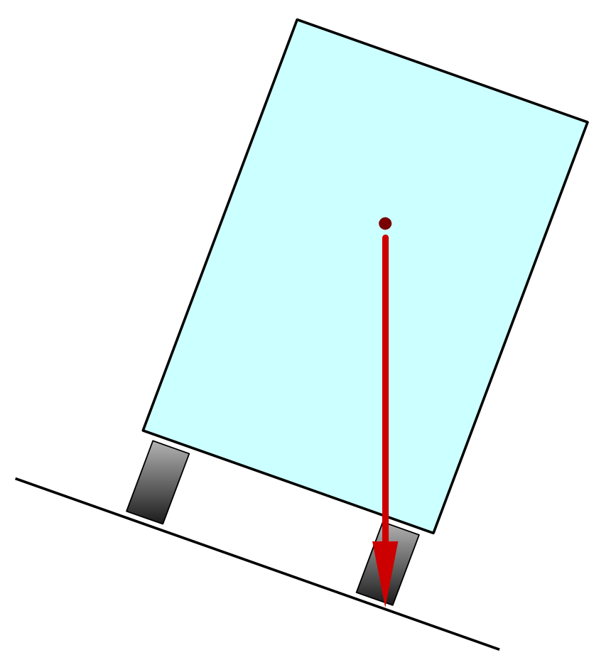

Estabilitat¶
Les estructures que estem estudiant, a més de ser rígides per suportar les càrregues sense trencar -se ni deformar -se, han de ser estables no anul·lar, lliscar ni anar a les forces externes.
Hi ha diversos problemes que poden presentar les estructures per la seva manca d’estabilitat. A continuació, es detallen els més comuns.
: Índex: `Robo '¶
El canvi d'una estructura es produeix quan el centre de gravetat no es basa en el suport de l'estructura.
- : Índex: `Centre de gravetat ':
És el punt mig de tota la massa de l'estructura. És el punt en què hem donat suport intuïtivament l’estructura de manera que no es gira cap a un costat o altre.
En el cas d’un martell, el seu centre de gravetat es troba al mànec, molt a prop del cap, que és la part més pesada.



En el cas del camió de la figura, el centre de gravetat es troba al punt vermell, relativament alt.
A la primera imatge, el centre de gravetat es troba dins de la zona de suport, de manera que el camió és estable i no gira.
A la segona imatge, el camió s’inclina i el centre de gravetat està a punt de deixar la zona de suport. El camió està a punt de bolcar.
A la tercera imatge, el camió ha inclinat més i el centre de gravetat no es troba a la zona de suport. En aquest cas, el camió no és estable i girarà.
{kind=link}
Perquè es produeixi ** ** d'una estructura, el centre de gravetat ha de caure fora de la zona de suport de l'estructura amb el sòl.
Solucions de desviació¶
Hi ha diverses solucions per evitar que es converteixi una estructura.
- Afegiu un contrapès
Quan una estructura està massa escalada a un costat o a un pes lateral, pot fer -la bolcar, un contrapès al costat oposat pot solucionar el problema.
Exemple: contrapès a les grues de treball o als camions.

Treball amb el contrapès esquerre.¶
- Amplieu la base de suport
Com més gran sigui la base de suport, més difícil és que el centre de gravetat caigui fora de la base.
Exemples: camió de grua amb suports extensibles. Cotxe esportiu molt ampli. Les persones instintivament separen els peus els uns dels altres per tenir una base de suport més gran quan es mou el sòl.

Camió de bombers amb grua i suports extensibles.¶
Imatge de Hermann Kolinger a pixabay <https://pixabay.com/es/photos/bomberos-psado-r%C3%BCSTFahrzeug-srf-521137/> `` `` `` `` `` `` '- Baixeu el centre de gravetat
Si el centre de gravetat és menor, és més difícil caure de la base de suport.
Exemples: Per obtenir el centre de gravetat d’un camió, heu de col·locar els paquets més pesats a la part inferior i els llums de la part superior. Els cotxes esportius solen tenir un centre de gravetat baix i aconseguir una major estabilitat.

Fórmula 1 amb un centre de gravetat molt baix.¶
Imatge de Nathan Wright a pixabay <https://pixabay.com/es/photos/f1-coche-carreras-raza-velity-2722971/> `` `` `` `` `` `` `` `` `` `` `` `` `` `` `` `` ''- Ancoreu l'estructura a terra
Amb aquesta solució, l'estructura es reforça ampliant -la a terra.
Exemples: vents d’una tenda de campanya. Cables d’ancoratge d’antena. Bola o pal de bandera ancorada a terra.

Antenes de ràdio amb vents per ancorar -les a terra.¶
Imatge de logGawiggler a pixabay <https://pixabay.com/es/photos/antenas-parab%C3%B3licaS-inal%C3%A1Mbrico-43232/> `` `` `` `` `` `` `` ``
: Índex: `pandeo '¶

El buckling És una inestabilitat que es produeix en barres i columnes ** esvelt ** sotmès a compressió.
Quan la forma de la barra o la columna és molt estreta i molt llarga (esvelta), corre el risc de doblegar i perdre la seva resistència. El resultat final és que l'estructura es flexiona fins que es divideix i falla.
Solucions Pandeo¶
- Feu el perfil més gruixut
Si augmentem el perfil de la barra o la columna que fa que siguin més gruixuts, deixaran de ser esvelts i no es produirà la fulla.
Per exemple, es pot utilitzar un tub gruixut amb parets fines en lloc d’una barra sòlida. Els dos tenen el mateix pes i la mateixa quantitat de material, però el tub buit no s’aboca mentre que la barra sòlida, que és més esvelta, si Pandea.
S'utilitza, per exemple, en les estructures de les bicicletes formades per ** barres tubulars ** o en les estructures de les torres elèctriques formades per les barres en forma de ** l ** en lloc de barres sòlides.
- Mantingueu el centre de la barra
Si mantenim el centre de la barra per evitar que es mogui, no es produirà la fulla.
Per exemple, una torre d’alta tensió es construeix amb quatre esveltes barres verticals que admeten la major part del pes i les barres horitzontals i oblices que impedeixen que les barres verticals s’enfilin.
Oscil·lacions¶
Les oscil·lacions o vibracions d’una estructura poden ser beneficioses o perjudicials.
En determinats casos, és convenient que l'estructura no sigui completament rígida. Si l'estructura es pot flexionar i oscil·lar abans d'una càrrega externa, això li permet fallar. Els exemples d’aquest comportament ho tenen en els gratacels que oscil·len al seu sostre en cas de terratrèmol o en cas de donar suport a forts vents. Els pals del vaixell o les ales d’un avió també poden oscil·lar per adaptar -se als esforços que recolzen. Si aquestes estructures fossin completament rígides, es podrien destruir amb els grans esforços que donen suport.
En altres casos, les oscil·lacions poden unir -se gradualment a la mateixa que en un swing, provocant que l'estructura oscil·li cada cop més amplitud fins que s'esfondri. Això és el que va passar amb el famós Tacoma Narrows sobrenomenat Gallopin Gertie per les grans oscil·lacions que va patir quan la brisa de l'estiu bufava en les quals es va inaugurar. Quan va arribar la caiguda, un vent de només 64 quilòmetres per hora es va esfondrar el pont, afortunadament sense produir morts. Podeu veure un esdeveniment enregistrant a YouTube:
- Vídeo: Tacoma Narrows Pont Collapse " Gallopin 'Gertie ". <https://www.youtube-nocokie.com/embed/j-zczjxsxnw> ` `
Sense ser tan dramàtics, les oscil·lacions poden produir sorolls i vibracions molt molestes en altres casos. Això es produeix especialment en freqüències de ressonància que són les freqüències en què una estructura vibra de forma natural. Poc a poc, els efectes d’una petita vibració a la mateixa freqüència de ressonància, l’oscil·lació, que en un swing, poden ser molt grans i molestos.
Solucions a les oscil·lacions¶
- Eviteu les càrregues oscil·lants
- Aquesta és la solució dels soldats que caminen en formació per sobre d’un pont que no és gaire rígid. En aquest cas, els soldats deixen de caminar alhora i comencen a caminar de manera desorganitzada perquè el pont no ressoni el mateix ritme dels passos [#F1] _.
- Xoqueu l'estructura
- Aquesta és la solució que es pren a les rodes dels vehicles o en alguns edificis resistents al terratrèmol. Un amortidor és un element que alenteix les oscil·lacions i redueix la ressonància.
Exercicis¶
- Quins problemes d’estabilitat poden tenir les estructures?
- Dibuixa una estructura inestable i una altra que sigui molt estable.
- Quan gira una estructura?
- Quines solucions hi ha per evitar que es converteixi una estructura? Escriviu un exemple de cadascun.
- Què està fent un cop de puny?
- Com es pot evitar el flotador?
- Com es poden evitar les oscil·lacions de danys en una estructura?
Notes
| [1] | El Brouchton Bridge va ser un pont de suspensió a Manchester, Anglaterra, que el 1831 es va esfondrar després del pas d'un troop de soldats que caminava en formació. |